14 Human Oversight Patterns for AI Systems
We mapped how people oversee AI systems across regulations, customer systems and our own services.
- We studied AI regulations, a variety of our customers, our internal systems, and published applications to identify human-in-the-loop patterns.
- We found 206 human controls in the AI regulation, and almost all of them fit within one of 14 patterns.
- A "human pattern" is a set of values for who decides, the deadline, the outcome when nobody decides, the allowed decisions and the record kept.
Every AI system we have helped build reaches a point where a person has to decide. A payments agent matches an invoice to a purchase order and asks to pay the supplier 4,200 EUR. A notices agent drafts an adverse decision letter to a loan applicant. A model team proposes sending a new model 10% of production traffic. The payment, the letter and the rollout wait for a person to decide before the work continues.
Our customers build each human decision with the Akka SDK. A workflow step pauses for the person and resumes when the decision arrives. A timeout on the pause can send a reminder or move the decision to someone more senior. An autonomous agent can hand a task to a person and wait for the result. The workflow and the task are durable, so a wait that lasts days survives a restart of the service.
Until now, each of these human processes was designed individually, as its own Akka workflow. The team building the application decided who may answer, how long the answer may take, what happens when nobody answers, and what record the answer leaves. Here are some examples in real-world AI systems we have helped build where a human-in-the-loop control existed:
- A beverage manufacturer's data-use governance system sends every recommendation to a dataset owner or the governance lead, who confirms, overrides or escalates it with a mandatory reason. The reminder after three days and the escalation after seven are application code around a workflow pause.
- A medical-supply company's voice agent routes a call to a person at 21 points in its four call flows.
We did the same thing in our own services. A loan origination service, a trace ledger and a context layer, all built at Akka, each implemented the same oversight contract by hand. The loan origination service and the trace ledger marked a decision at risk when 75% of its time had passed, and the context layer marked it at 80%.
When we looked in our own regulatory corpus in Akka Verify, we found 206 controls that require a person to act. A control states one obligation from a regulation or framework and names the mechanism that enforces it. Our own schema had no way to describe what that person decides.
We also read the documentation of 34 products in AI governance, LLM operations and cloud agent services. Only three AI governance platforms among them turn a monitoring signal into a work item that someone owns and closes with a recorded outcome.
Across our customers' systems, our own services and the regulations, the same human processes kept recurring. We found fourteen recurring patterns, and each one is described below with the obligation behind it, its settings and a working example. Each pattern raises an oversight event, the record of one decision a person must make, and every oversight event moves through one set of states. The patterns differ in who decides, the deadline, the outcome when nobody decides, the allowed decisions and the record kept.
The fourteen patterns will soon be available as templates in the Akka Agentic AI Platform.
Rules beyond the wait
Teams that build human decisions with the Akka SDK start from its durable wait. A workflow in the Akka SDK pauses a step with thenPause and continues when a command arrives. An operator can also suspend a workflow from outside with suspend and continue it with resume. An autonomous agent can create a task that a person completes instead of an agent. The workflow state and the task both persist, so a wait survives a restart of the service.
The rules of the decision itself are application code. The person who answers needs authority: a role, and for some decisions a qualification such as expertise in the relevant field of medicine. Some people are excluded from answering, such as the agent or person who made the request, or the author of a change. The answer has a deadline, and the control declares the outcome when the deadline passes with no answer. A minimum review time rejects an approval made faster than the control allows. The answer leaves a record of who decided, what they saw, how long they looked and why.
Figure 1
The durable wait in the Akka SDK and the rules an application adds to it
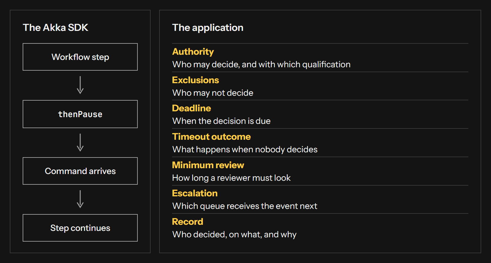
Human in the loop (HITL) describes a person deciding one transaction. Human on the loop (HOTL) describes a person overseeing a running system. Each term covers situations that hold the work and situations that let the work continue. A review of an adverse notice before it is sent holds the letter until the reviewer answers. An appeal of the same notice after it is sent leaves the decision in force while the appeal is heard. Both the review and the appeal are human in the loop.
Sources and method
We looked for human oversight patterns in systems our customers built with the Akka SDK, in the regulatory corpus in Akka Verify, in three services we built ourselves, and in 34 products on the market. The work ran from September 29 to October 31, 2026.
Customer systems
We compared the patterns with the oversight in three customer systems: a beverage manufacturer's governance of licensed third-party data, a medical-supply company's voice agent, and a medical-device company's research system.
The beverage manufacturer's system evaluates requests to use licensed data against the vendor contracts. Agents extract the contract terms and draft a rationale for each request. Fixed rules choose the recommended outcome. The system's README states the constraint in one line: "The AI never decides and never grants access." Every recommendation waits in one queue for a dataset owner or the governance lead. The specification requires that reviewers "be able to confirm, override (choosing a different outcome) or escalate, each with a mandatory reason." The specification also sets a reminder after three days and an escalation to the governance lead after seven, and the team built both as timeouts on a workflow pause. Contract terms that the extraction marks as low-confidence or ambiguous wait for a person to verify or correct them before a contract version is published.
The medical-supply company's voice agent handles reorder consent, balance questions, collections and outbound calls. Its four call flows route a call to a person at 21 points. A change of insurance, doctor or shipping address goes to a person every time. When retries are exhausted, the runtime hands the caller to a person. Outside business hours the agent has no person to hand the call to, and it asks the caller to call back.
The medical-device company's research system finds and grades AI agent frameworks, and every grade quotes a stored source. A researcher approves each proposed framework before the system starts tracking it. A researcher can correct a grade, and the code describes the correction as "a correction by a named person, with their reasoning. Anonymous overrides are not permitted." An acceptance criterion requires an independent reviewer, sampling 20 graded cells, to agree with the rating in at least 90% of cases.
The three customer systems contain seven of the fourteen patterns: action approval, decision review, change authorization, match and adjudication, override, triage and hand-off. Each team built the routing, the reminders, the escalation and the mandatory reasons by hand. No team measured how long its reviewers took or how often they approved.
The regulatory corpus in Akka Verify
Akka Verify holds a corpus of controls drawn from regulations and frameworks. A control states one obligation, quotes the source text, and names the mechanism that enforces it. The mechanisms are guardrails, which check a request or a response at run time; sanitizers, which remove data such as personal information; evaluations, which score outputs; gates, which check an artifact before a release; and human controls, in which a person decides. On October 31, 2026, the corpus held 1,751 controls from 241 regulations and frameworks.
The study read every control in the corpus and its control packs and found 206 that require a person to act. The count leaves out 53 consent controls, in which a data subject agrees to processing and nobody decides inside the system. A person-related control could have any mechanism. A signed annual review checked before a release is a gate, and an approval at run time is a human control.
The study gave every person-related control one primary pattern. The fourteen patterns hold 183 of the 206 controls. The other 23 controls describe who may oversee a system, such as a requirement to name competent overseers, and the library holds that information in an overseer registry.
Article 14(4)(d) of the EU AI Act requires that the person overseeing a high-risk system can "disregard, override or reverse the output of the high-risk AI system." The Medicare Advantage rule at 42 CFR 422.566(d) requires that an adverse medical-necessity determination "must be reviewed by a physician or other appropriate health care professional with expertise in the field of medicine or health care that is appropriate for the services at issue." Article 22(3) of the GDPR gives a data subject "at least the right to obtain human intervention on the part of the controller, to express his or her point of view and to contest the decision." Article 12 of MiFID II RTS 6 requires an investment firm to be able to "cancel immediately, as an emergency measure, any or all of its unexecuted orders," which the regulation calls kill functionality.
Figure 2
Person-related controls in the study, by classification
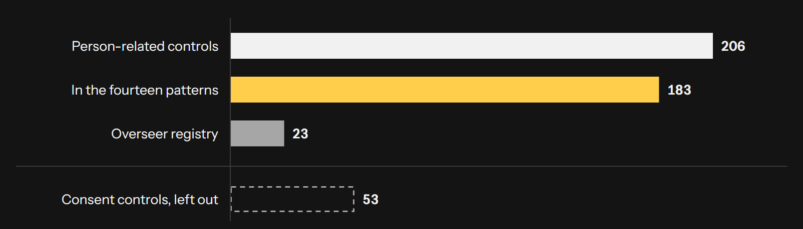
Figure 3
Person-related controls by pattern
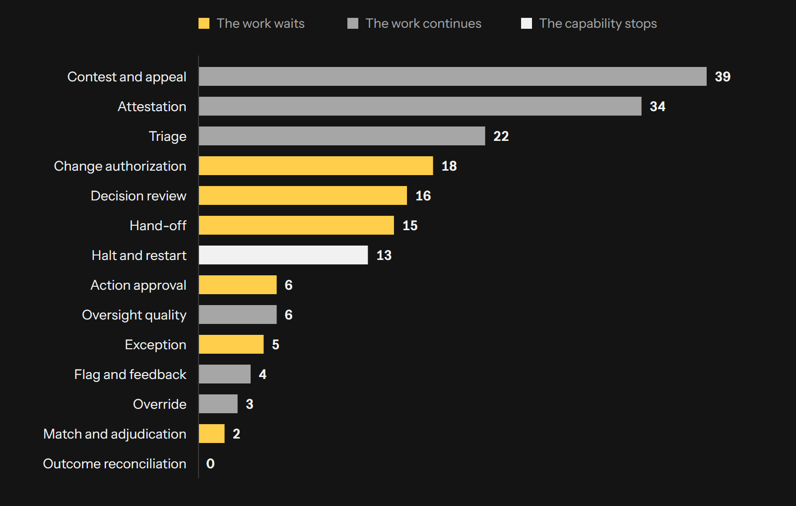
Akka services that implemented oversight by hand
Before the library existed, three services built at Akka implemented the same oversight contract by hand. The oversight contract is the set of HTTP routes and JSON documents that a console uses to list, claim and decide oversight events. The loan origination service and the trace ledger were built for demonstrations of the Akka console. The context layer governs the data that agents read, and it holds 17 human controls. A fourth, partial implementation in the console's companion process, written in Go, recomputed the queue filters, the urgency order and the oversight figures.
The three Java implementations settled the same situations differently.
Table 1
Rules on which the three implementations disagreed, and the library default
| Rule | Loan origination | Trace ledger | Context layer | Library default |
|---|---|---|---|---|
| At-risk point | 75% | 75% | 80% | 75% |
| Claim length | Configured | 15 minutes | 30 minutes | 30 minutes |
| Split two-person vote | No rule | No rule | Any vote other than approve settles it | Settles as a denial |
| Deadline while sent back | Runs | Paused | Runs | Runs |
| Decision after the deadline | No rule | Accepted, verdict breached | Refused | Accepted, verdict breached |
| Minimum review time | Not enforced | Refused | Warned or refused | Enforced |
| Qualification check | Always passes | Registry | Roles in the identity token | Overseer registry |
The at-risk point is the share of the time to the deadline that has passed when the event is marked at risk. A claim is a reviewer's reservation of an event, and an expired claim returns the event to the queue. An event sent back returns to its proposer for changes. A verdict is the judgment recorded on the oversight itself, separate from the decision.
The market survey
On September 29, 2026, we finished reading the documentation of 34 products: AI governance platforms, LLM operations and evaluation tools, enterprise and cloud agent services, and infrastructure for agent approvals.
Eight products in the survey route a new AI system to a person for approval before it goes live. Three AI governance platforms turn a monitoring signal into a work item with an owner and a recorded outcome. One governance platform documents both reminders and an automatic action when a review times out. One product blocks a person from approving a deployment they created, and another product requires a different approver at each stage of an approval. The four products that can stop or block an agent record no reason for the stop and require no approval to restart the agent. No product in the survey reports an override rate by control, model or reviewer.
Classification rules
Low model confidence appears in the corpus only as a condition inside other controls, and the study classified it as a trigger. A low-confidence result raises an action approval, a decision review or a hand-off.
No control in the corpus covers a reviewer who never answers. Every pattern declares a timeout outcome and an escalation chain for that case.
Partway through, we settled on the rule that made the classification hold together: a pattern belongs only to a control whose mechanism is a person deciding. A gate on a signed attestation keeps its mechanism and carries no pattern. When a person must act on what an evaluation found, the corpus holds a second control, with a human mechanism, for the person's decision. The control eu-ai-act.art14.4.b.rubber-stamp-rate is an evaluation that measures the share of human reviews approved in under 8 seconds. The paired human control, eu-ai-act.art14.4.b.oversight-reset, has the oversight owner decide how oversight is restored before new high-risk decisions resume.
Changes to the corpus during the study
The corpus grew from 1,718 controls, 38 of them human controls, on October 27, 2026, to 1,751 controls, 56 of them human controls, on October 31. At the start, change authorization, exception, match and adjudication, and outcome reconciliation had no human control. Gates enforced the change authorization, exception and match obligations, such as a check before deployment that a change was approved. No control named outcome reconciliation.
Applying the mechanism rule split 12 controls that combined a person with another mechanism, and added 18 human controls beside existing gates. Outcome reconciliation still has no human control in the corpus.
Figure 4
Human controls in the corpus on October 27 and October 31, 2026, by pattern
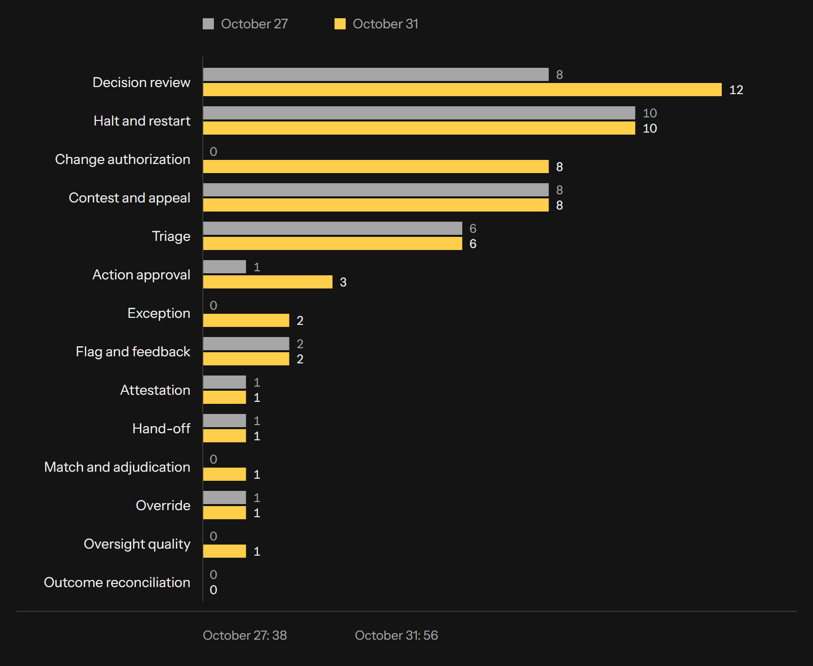
The oversight event and its settings
A human control raises an oversight event when its trigger fires. The event records the control, the pattern, the subject under decision, the question for the reviewer and the deadline.
An event is open when it is raised. A reviewer claims the event, which reserves it for 30 minutes by default. The event is in review while the reviewer reads it. The event is decided when the reviewer answers. A control that needs two people holds the event as awaiting a second reviewer after the first vote. The service that owns the subject applies the decision and reports it applied. The event then closes. An event can also be escalated to the next queue, sent back to its proposer for changes, timed out, abandoned, withdrawn by its requester, or reopened after it closes.
Figure 5
States of an oversight event
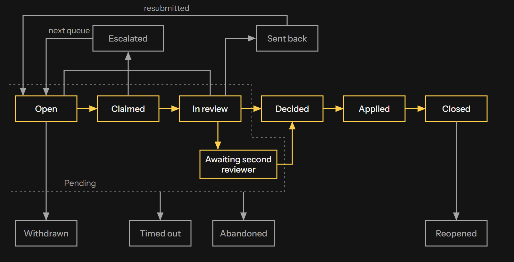
The oversight engine records decisions. The service that owns the payment, the letter or the rollout carries out the decision and reports the result to the engine.
A human control states its settings in a human_config block, which version 2.8 of the Verify schema defines. A setting left out of the block takes the pattern's default, and then the shared default.
Table 2
Settings of a human control
| Setting group | Settings |
|---|---|
| Who decides | Roles; qualification; independence from the requester, the author or the first decider; the number of reviewers required |
| When | Deadline; at-risk point; claim length; minimum review time, warned or enforced; whether the deadline runs while the event is sent back |
| If nobody decides | Timeout outcome: raise, resume with a default decision, escalate or abandon; the escalation queues and their delays |
| How | The allowed decisions; whether a reason is required; whether the reviewer may edit the subject |
| Afterwards | The proof record; the verdict on the oversight; reopening; standing decisions |
| Where | Shadow or live in each environment; whether the control prevents, warns or records |
A control in shadow records the event it would have raised and holds no work.
The pattern tour is a sample service in the akka/human library that runs one human control for each pattern. Its action approval control is configured with this block:
- id: pt-0001
name: Payments above the limit need the system owner
corpus_ref: aws-agentic-scoping.scope2-human-approval
flavor: human-system-authorization
human_config:
pattern: action-approval
subject_kind: action
trigger: { detector: tool-policy, condition: "pay.amount > 1000" }
routing: { roles: [ai-system-owner], attestations: [eu-ai-act-oversight] }
accountable_owner: ai-system-owner
sla_target: PT30M
escalation_chain:
- { queue: system-owners, roles: [ai-system-owner] }
- { queue: head-of-operations, roles: [head-of-operations], after: PT30M }
minimum_review_seconds: 10A payment above 1,000 EUR raises the event. An AI system owner who holds the eu-ai-act-oversight attestation may decide it. The event moves to the head of operations after 30 minutes. An approval counts only after the reviewer has spent 10 seconds on the event.
Each settled event also receives a verdict on the oversight itself. An event decided in time by an authorized and qualified reviewer, with the votes, the reason and the review time the control requires, is upheld. A decision accepted after the deadline is recorded as breached, with the reason late. A timeout that lets the subject proceed with an approval is recorded as breached, with the reason fail-open.
Verify defines one vocabulary of decisions: APPROVE, DENY, EDIT, REDIRECT, REPLAN, ESCALATE, HALT, RECUSE, REQUEST_MORE_INFO, SEND_BACK, DECLINE_SYSTEM, OVERRIDE, DISREGARD and REVERSE. Each pattern shows reviewers its own labels for those decisions. An appeal's Uphold is APPROVE, and a hand-off's Take over is DECLINE_SYSTEM. A reviewer can make an approval standing for the rest of a session, or make an approval or a denial standing for future events that match a declared pattern until it is revoked.
The service appends a HumanOversightDecisionRecordedV2 record for every settling decision and every vote, and HaltExercised and HaltLifted records for halts.
Figure 6
The proof record of one action approval
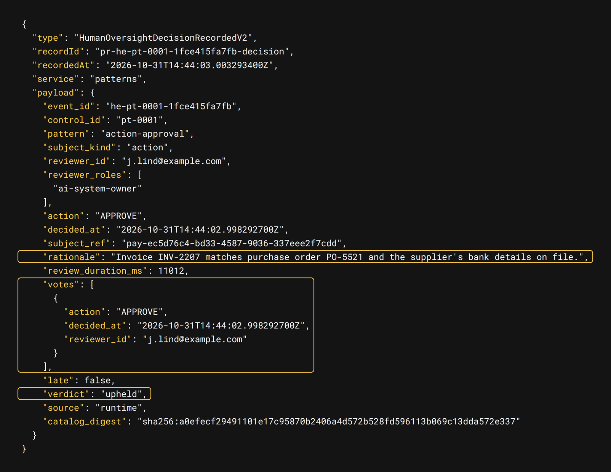
The patterns group by when the person acts: before the system acts, after it acts, while it runs, or on a schedule and across many decisions.
Figure 7
Human oversight patterns grouped by when a person acts
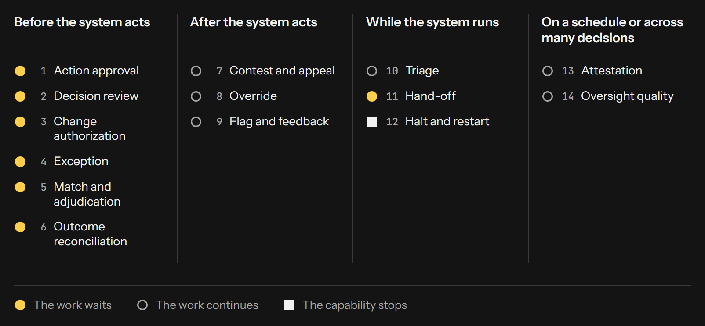
Pattern 1 - Action approval
A person approves an action before the system takes it. In the pattern tour, the payments agent reads invoice INV-2207 from supplier S-77 for 4,200 EUR and matches it to purchase order PO-5521. Payments above 1,000 EUR need an AI system owner, so the payments workflow raises an action approval and pauses.
The agentic AI framework from Singapore's IMDA asks organizations to "define significant checkpoints or action boundaries that require human approval, especially before sensitive actions are executed." The same framework lists "denying action by default when approval infrastructures fail" as a safeguard. A circular from Hong Kong's Securities and Futures Commission requires firms to "apply maker-checker controls for high-impact actions." Action approval holds 6 of the 183 classified controls, and 3 of the 56 human controls in the corpus today. The loan origination service raises an action approval for a deadline extension, and the medical-device research system asks a researcher to approve each framework before tracking it.
| Setting | Action approval |
|---|---|
| Raised when | An agent or workflow asks to take an action with an effect outside the system |
| Who decides | Someone other than whoever, or whatever, asked |
| Does the work wait | Yes |
| Decisions | Approve, deny, edit then approve, ask for more, escalate |
| If nobody decides | Deny |
| Record | Who approved which action, after how long, and why |
One approval covers one action. A standing approval, which approves later calls that match a declared pattern, is a separate decision with its own record. A standing approval applies until it is revoked. Edit, then approve lets the owner change the amount before the payment goes out, and the record keeps the change. The tour's tool-call guardrail applies the same control to an agent's tool call: the guardrail refuses the call, citing the event, until a person approves it, and then allows the call once.
Video 1
Action approval of a supplier payment
In the tour, an unanswered payment approval moves to the head of operations after 30 minutes, and the payment workflow cancels the payment if nobody approves it within two hours.
Pattern 2 - Decision review
A person reviews a decision about someone before it takes effect. In the pattern tour, the notices agent has drafted an adverse notice to Mara Lindqvist. The notice workflow holds the letter and asks a case reviewer to read it.
Iowa House File 2635 bars a utilization review organization from denying or downgrading a prior authorization request unless the decision is made by "a qualified reviewer" or "a clinical peer." Rules in Colorado and Washington require a licensed professional to decide a prior authorization denial based on medical necessity. Decision review holds 16 of the 183 classified controls, and 12 of the 56 human controls in the corpus today. The beverage manufacturer's system applies decision review to every data-use recommendation.
| Setting | Decision review |
|---|---|
| Raised when | An automated decision about a person, such as a denial or an adverse notice, is ready to take effect |
| Who decides | A qualified person inside the domain |
| Does the work wait | Yes |
| Decisions | Confirm, do not issue, amend, ask for more, escalate |
| If nobody decides | Escalate |
| Record | The reviewer, their qualification, the version confirmed or amended, and the reason |
The engine checks the reviewer's qualification against an overseer registry at the moment of the decision. Decision review has no default decision: an unanswered event escalates, and the notice stays held. The tour's control enforces a minimum review time of 20 seconds, which rejects a confirmation made before the reviewer could have read the notice.
Figure 8
A case reviewer's view of a held adverse notice
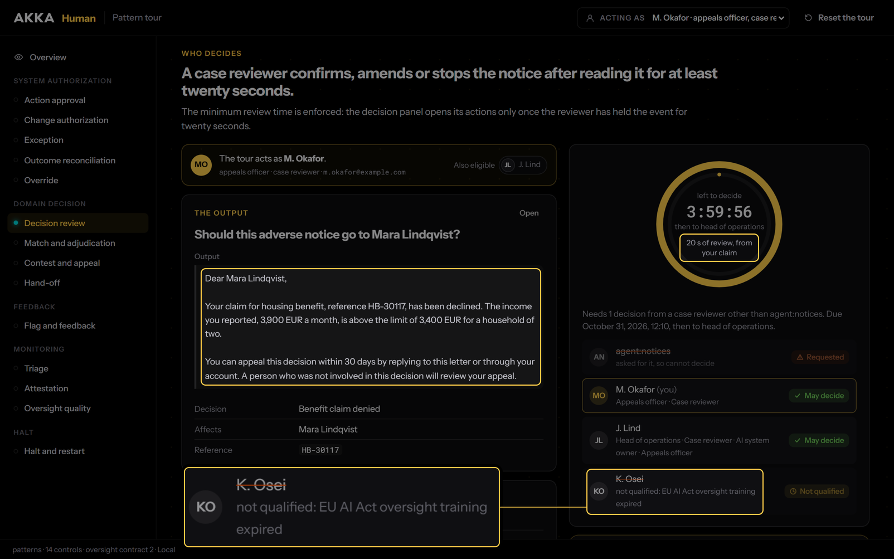
Pattern 3 - Change authorization
Two people who neither proposed nor built a change approve it before it reaches production. In the pattern tour, K. Osei proposes rolling out model m-5 to 10% of the notice-writing traffic. The trainer built the model. The rollout workflow stops and asks two model risk owners to approve.
MiFID II RTS 6 Article 5 states that "a person designated by the senior management of the investment firm shall authorise the deployment or substantial update of an algorithmic trading system, trading algorithm or algorithmic trading strategy." OSFI Guideline E-23 states that "the model review process should be independent from model development." Change authorization holds 18 of the 183 classified controls. The corpus held no human control for it on October 27, and holds 8 today. The context layer has six change authorization controls among its 17 human controls. The loan origination service and the trace ledger require two people for a change.
| Setting | Change authorization |
|---|---|
| Raised when | A release, model, prompt, policy, connector or new use case is proposed for production |
| Who decides | Approvers separate from the proposer and the builder |
| Does the work wait | Yes |
| Decisions | Approve the change, reject, request changes |
| If nobody decides | Escalate |
| Record | Each approver's vote, the change as approved, and the evidence attached |
The control excludes the proposer and the builder from the approvers, and two approvals settle the event. A split vote settles as a denial. A request for changes sends the event back to the proposer, who resubmits it. The deadline keeps running while the proposer works. In the beverage manufacturer's system, the governance lead uploads and publishes each contract version, and a published version changes the rules every later recommendation runs on.
Video 2
Approval of a model rollout by two model risk owners
Pattern 4 - Exception
A person grants a time-limited exception to a rule, with a reason. In the pattern tour, J. Lind asks to set aside the Friday deployment freeze, rule R-12, to ship a billing security fix before tomorrow evening. The compliance lead decides.
Under Article 5(3) of the EU AI Act, each use of real-time remote biometric identification for law enforcement in publicly accessible spaces "shall be subject to a prior authorisation granted by a judicial authority or an independent administrative authority." A judicial or independent administrative authority decides that exception for the organization that runs the system. Exception holds 5 of the 183 classified controls. The corpus held no human control for it on October 27, and holds 2 today. The context layer has one exception control.
| Setting | Exception |
|---|---|
| Raised when | A rule must be set aside for a stated scope and time |
| Who decides | A second-line function such as compliance, and for some rules an outside authority |
| Does the work wait | Yes |
| Decisions | Grant until the expiry, refuse |
| If nobody decides | Refuse |
| Record | The rule, the scope, the expiry, the justification, the compensating measures and the grantor |
Every exception names the rule, the scope and the expiry before anyone can grant it. A granted exception carries its expiry into the service's records, and an unanswered request is refused.
Figure 9
An exception request for the Friday deployment freeze
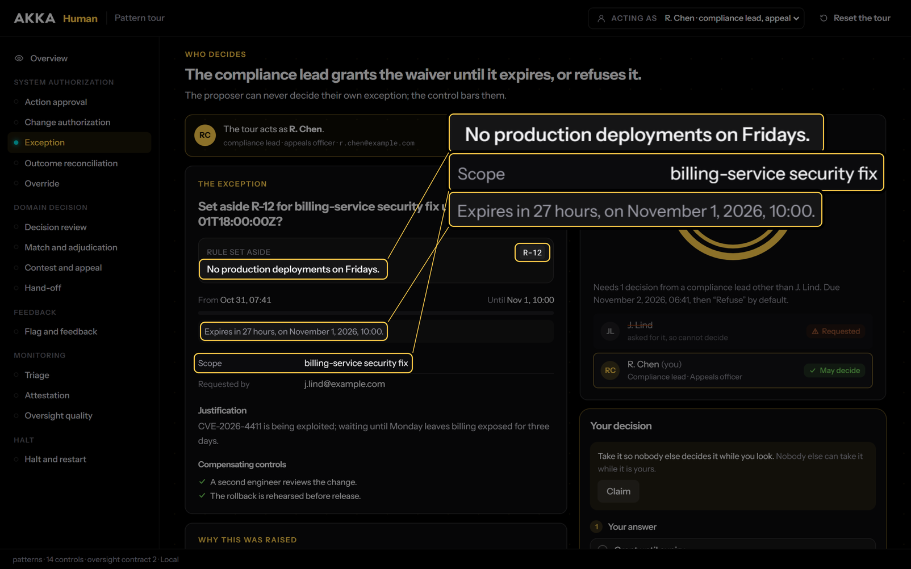
Pattern 5 - Match and adjudication
A person decides whether two records describe the same thing. In the pattern tour, the matcher scored a CRM customer and a claims customer at 0.78, between its thresholds for keeping records apart and for merging them. A data steward decides.
Article 14(5) of the EU AI Act requires, for remote biometric identification, that "no action or decision is taken by the deployer on the basis of the identification resulting from the system unless that identification has been separately verified and confirmed by at least two natural persons with the necessary competence, training and authority." Match and adjudication holds 2 of the 183 classified controls. The corpus held no human control for it on October 27, and holds 1 today. The context layer routes every join of records from different sources through match and adjudication. The beverage manufacturer's system holds low-confidence contract terms for a person to verify, and the medical-device system shows contradictory sources side by side for a researcher to resolve.
| Setting | Match and adjudication |
|---|---|
| Raised when | The system cannot tell whether two records are one entity, or which label is correct |
| Who decides | A reviewer other than whoever loaded either record |
| Does the work wait | Yes, for anything that uses the match |
| Decisions | Same, different, relabel |
| If nobody decides | The records stay unmatched |
| Record | Both records, the score, the matching method and the reviewer's answer |
Independence in match and adjudication means that the reviewer did not load either record into the system. Whoever loaded the records may not decide the match.
Figure 10
Customer records from CRM and claims with a match score of 0.78
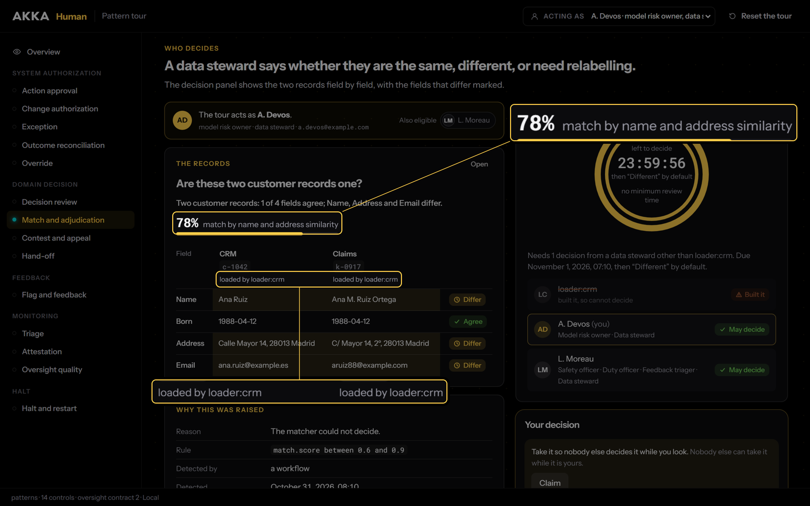
Pattern 6 - Outcome reconciliation
A person establishes what happened when the system cannot tell. In the pattern tour, the agent paid supplier S-31 860 EUR, and the payment provider timed out after accepting the request. The payment workflow pauses and asks an operator what happened.
No control in the corpus names outcome reconciliation. The context layer raises it when the result of an action is unknown, and the study kept it as a candidate pattern.
| Setting | Outcome reconciliation |
|---|---|
| Raised when | An action was sent and its result is unknown |
| Who decides | A reviewer other than the requester |
| Does the work wait | Yes, for any retry |
| Decisions | "It happened", "It did not happen", "Retry" |
| If nobody decides | Escalate |
| Record | What was sent, when, the last known state and the reviewer's finding |
A retry after an accepted request can pay the supplier twice. The workflow waits for a person instead of retrying. The medical-supply company's voice agent handles the same situation with an idempotency key, an identifier that lets the payment service recognize a retried card charge as the same operation and return the original outcome. Outcome reconciliation applies to providers that accept no such key.
Figure 11
A payment whose result is unknown
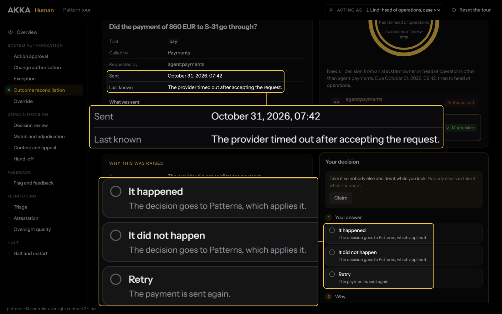
Pattern 7 - Contest and appeal
A person affected by a decision appeals it to someone independent of it. In the pattern tour, Mara Lindqvist received the adverse notice and disagrees with it. Her appeal goes to an appeals officer who had no part in the first decision.
Colorado SB26-189 requires a deployer, on request after an adverse outcome from a consequential decision, to provide "an opportunity for meaningful human review." Contest and appeal holds 39 of the 183 classified controls, and 8 of the 56 human controls in the corpus today. The loan origination service handles contest reviews. No customer system in the study offers an appeal.
| Setting | Contest and appeal |
|---|---|
| Raised when | The person affected asks for human review of a decision already made |
| Who decides | Someone other than the first decider and anyone in that person's reporting line |
| Does the work wait | The decision stays in force while the appeal is heard |
| Decisions | Uphold, modify, overturn, ask for more |
| If nobody decides | Escalate |
| Record | The original decision, the grounds, the appeals officer and the outcome |
The appeal starts from the affected person. The control excludes the first decider and everyone in the first decider's reporting line. The tour's control enforces a minimum review time of 30 seconds for the appeals officer.
Figure 12
An appeal against an adverse notice
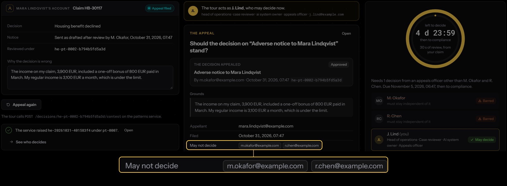
Pattern 8 - Override
A person sets aside or replaces an output the system produced, and says why. In the pattern tour, the eligibility assessor found Ana Ruiz not eligible, with no person in the loop. An oversight officer knows that her income includes a one-off payment and reverses the output.
Article 14(4)(d) of the EU AI Act requires that an overseer can disregard, override or reverse an output. No control in the corpus requires the overseer to give a reason. Override holds 3 of the 183 classified controls, and 1 of the 56 human controls in the corpus today. Two customer systems require a reason: the beverage manufacturer's reviewers override with a mandatory reason, and the medical-device system permits no anonymous correction of a grade.
| Setting | Override |
|---|---|
| Raised when | A person disregards, replaces or reverses an output |
| Who decides | The oversight person |
| Does the work wait | Decided at once, as the person raises it |
| Decisions | Override with a replacement, disregard, reverse |
| If nobody decides | Not applicable |
| Record | The original output, the replacement, the person and the reason |
The override pattern requires a reason. The record keeps the original output beside the replacement.
Figure 13
An oversight officer reverses an eligibility assessment
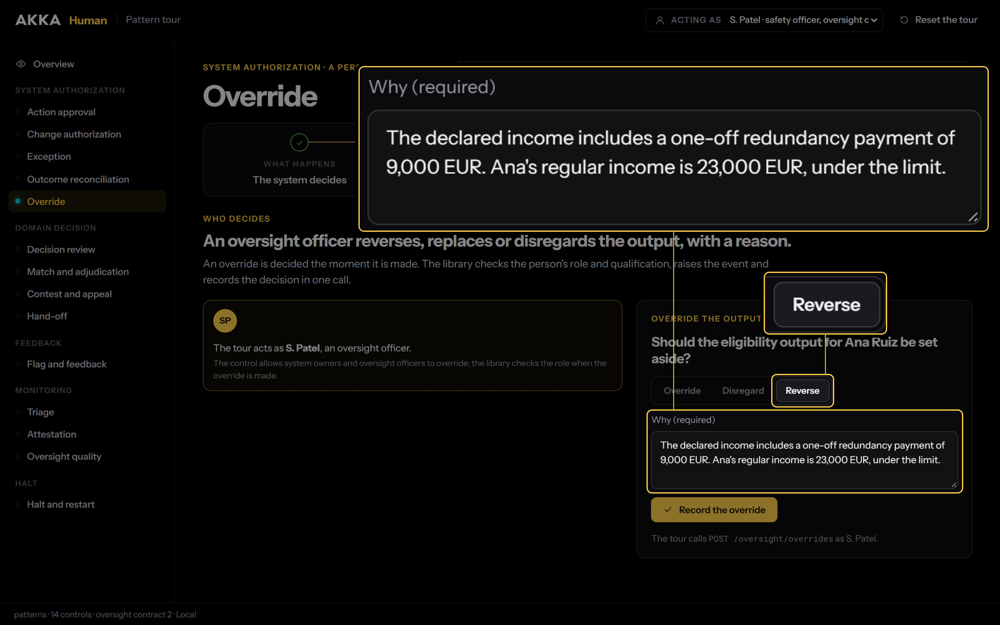
Pattern 9 - Flag and feedback
Anyone can flag an output as wrong, and a triager decides whether it becomes an evaluation case. In the pattern tour, a customer asks the assistant when a refund arrives, gets a wrong answer, and flags the reply.
The FINOS AI Governance Framework describes a human feedback loop as "systematically collecting, analyzing, and acting upon feedback provided by human users, subject matter experts (SMEs), or reviewers regarding an AI system's performance, outputs, or behavior." Flag and feedback holds 4 of the 183 classified controls, and 2 of the 56 human controls in the corpus today. The loan origination service turns accepted flags on its replies into evaluation cases.
| Setting | Flag and feedback |
|---|---|
| Raised when | Someone marks an output as wrong |
| Who decides | A feedback triager |
| Does the work wait | The work continues |
| Decisions | Accept as an evaluation case, dismiss |
| If nobody decides | The flag ages out |
| Record | The output, the flag, the triager's decision and the evaluation case created |
An accepted flag becomes an evaluation case. The output that a person marked wrong joins the cases the system is evaluated against.
Figure 14
A flagged reply and the evaluation case it became
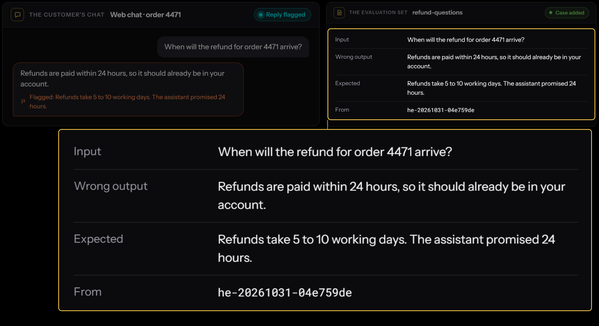
Pattern 10 - Triage
A monitor raises a signal, and a person decides whether it is a problem while the work carries on. In the pattern tour, the referral share of eligibility assessments has a baseline of 35%. A reading of 12% crosses the 20% threshold, and the monitor raises a triage event.
Article 73 of the EU AI Act requires a serious incident report "not later than 15 days after the provider or, where applicable, the deployer, becomes aware of the serious incident," with shorter limits for a widespread infringement and other cases. Triage holds 22 of the 183 classified controls, and 6 of the 56 human controls in the corpus today. The loan origination service raises triage events from its behavior monitors, and the cases in the context layer are triage events. The beverage manufacturer's system sends a request to a person when its prompt-injection guardrail blocks the request.
| Setting | Triage |
|---|---|
| Raised when | A monitor, watcher or anomaly detector finds something |
| Who decides | The team the event is routed to |
| Does the work wait | The work continues |
| Decisions | Resolve, dismiss, report |
| If nobody decides | Escalate |
| Record | The reading, the threshold, each occurrence and the decision |
Repeated readings add occurrences to the open triage event. The reviewer sees how many times the signal fired before deciding.
Figure 15
A triage event for a drop in the referral share
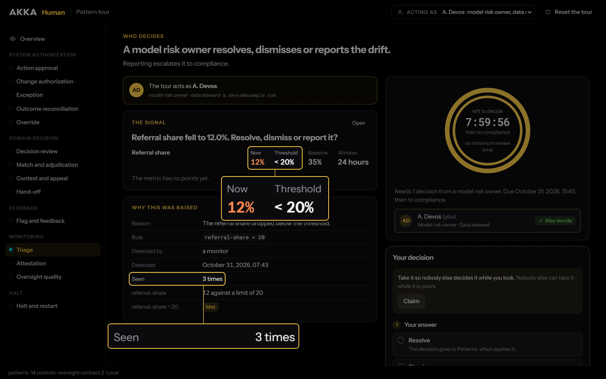
Pattern 11 - Hand-off
The agent hands a conversation to a person, who takes it over. In the pattern tour, a customer in web chat asks to speak to a person. The agent says it will bring someone in, and the conversation workflow pauses the agent.
China's National Financial Regulatory Administration requires in its AI guidance that, when a failure occurs, "a manual process steps in promptly or a backup system is activated" (our translation). Hand-off holds 15 of the 183 classified controls, and 1 of the 56 human controls in the corpus today. The context layer hands a failed step to a person. The medical-supply company's voice agent hands a call to a person at 21 points in its call flows.
| Setting | Hand-off |
|---|---|
| Raised when | A user asks for a person, a crisis signal appears, or a step fails |
| Who decides | The person on duty |
| Does the work wait | The conversation waits |
| Decisions | Take over, return to the agent, close |
| If nobody decides | Escalate to a fallback route |
| Record | The transcript at the hand-off, the reason, who took over and the outcome |
The conversation waits, and the rest of the system continues. The control declares a fallback route for an event nobody takes. In the tour, an untaken hand-off moves to the head of operations after five minutes. The voice agent has no fallback route outside business hours, and it asks the caller to call back.
Video 3
A web chat handed to the duty officer
Pattern 12 - Halt and restart
An authorized person stops a capability at once, and restarting it takes two people and a safe state. In the pattern tour, S. Patel, a safety officer, sees eligibility assessments behaving oddly and halts them. Every call to the assessment capability is then refused with HTTP 503.
Article 14(4)(e) of the EU AI Act requires that an overseer can "interrupt the system through a 'stop' button or a similar procedure that allows the system to come to a halt in a safe state." The UK Ministry of Defence's JSP 936 requires that a system found behaving outside acceptable bounds "must be taken out of use until reviewed at the appropriate level." Halt and restart holds 13 of the 183 classified controls, and 10 of the 56 human controls in the corpus today. The context layer has two halt controls, and the loan origination service halts its assessments. No customer system in the study has a halt.
| Setting | Halt and restart |
|---|---|
| Raised when | A person decides that a capability must stop now |
| Who decides | One authorized person to halt; two others to approve the restart |
| Does the work wait | The capability stops |
| Decisions | Halt, approve the restart, keep halted |
| If nobody decides | The capability stays halted |
| Record | HaltExercised and HaltLifted records, beside the decision records |
The halt takes effect at once and needs no second person. The restart is a separate event. The person who asks for the restart cannot approve it, and the approval waits until every safe-state check passes. In the tour, the safe-state check confirms that the backlog of assessments has drained.
Video 4
A halt of eligibility assessments and the restart
Pattern 13 - Attestation
A person confirms on a schedule that a system is still fit for use. In the pattern tour, a model risk owner attests every quarter that the eligibility model is still fit for use, against its latest validation report. A quarterly timer raises the attestation and sets the next one.
Attestation holds 34 of the 183 classified controls. The corpus today holds one attestation control with a human mechanism. The other 33 use other mechanisms, such as a gate on a signed attestation before a release. The context layer keeps two attestation controls, and it records the acceptance of a control and the assertion of its evidence as separate records by different people. The medical-device system's independent agreement check runs once, as an acceptance criterion.
| Setting | Attestation |
|---|---|
| Raised when | A schedule: a quarterly review, an annual validation, a periodic acceptance |
| Who decides | An owner, a board or an independent validator |
| Does the work wait | The work continues |
| Decisions | Attest, attest with findings, refuse to attest |
| If nobody decides | The control's evidence goes stale |
| Record | The target, the period, the evidence and its date, and the attestation |
Attest with findings is a separate decision: the system stays in use, and the findings are recorded against it. A missed attestation marks the control's evidence stale.
Figure 16
A quarterly attestation of the eligibility model
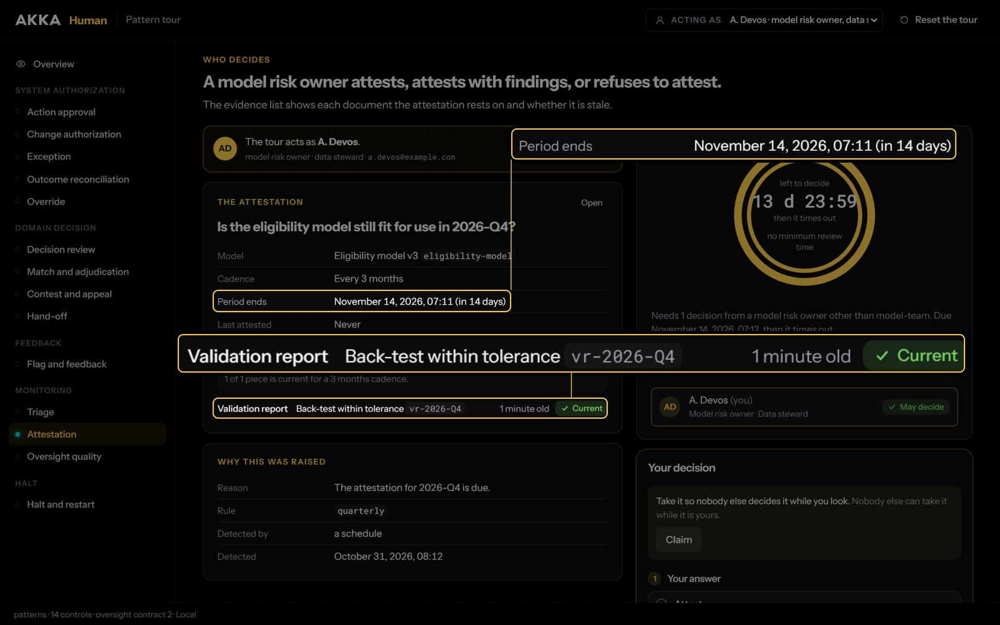
Pattern 14 - Oversight quality
The oversight itself is watched, and its accountable owner acts when people review too quickly. In the corpus, the evaluation eu-ai-act.art14.4.b.rubber-stamp-rate measures the share of human reviews approved in under 8 seconds over a trailing 7 days, against a default threshold of 10%. When the share crosses the threshold, the paired human control sends the finding to the oversight owner, who decides how oversight is restored before new high-risk decisions resume.
Article 14(4)(b) of the EU AI Act requires that overseers can "remain aware of the possible tendency of automatically relying or over-relying on the output produced by a high-risk AI system (automation bias)." The 8-second duration and the 10% threshold are Akka policy parameters. The Act sets neither value. Oversight quality holds 6 of the 183 classified controls. The corpus held no human control for it on October 27, and holds 1 today. The trace ledger computes review-time and approval-rate figures. No customer system in the study measures its reviewers.
| Setting | Oversight quality |
|---|---|
| Raised when | Review times, approval rates or override rates cross a limit |
| Who decides | The control's accountable owner |
| Does the work wait | New high-risk decisions can be blocked until the owner acts |
| Decisions | Reset, retrain, reassign |
| If nobody decides | Escalate; the signal stays raised |
| Record | The figures, the window, the reviewers involved and the owner's action |
The subject of an oversight-quality event is the oversight performed under the other thirteen patterns. The accountable owner lifts a block on new high-risk decisions.
Figure 17
An oversight-quality finding for payment approvals
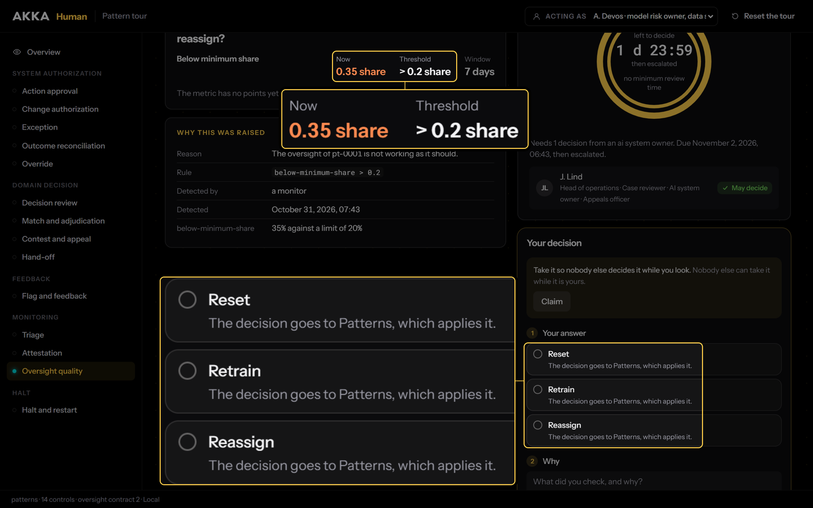
Reviewer screens
An oversight event is a JSON document served at /oversight/events, so any screen that reads the oversight contract can show the event and send the decision.
The library's oversight console lists the events of every service it finds and shows a decision panel for each pattern. A service can also show its events in its own screens. The context layer shows its match decisions on its Links screen. The loan origination service shows underwriting reviews on its loan desk. The console kit provides the queue, the decision panel, the deadline ring and the record as React components, and as web components for consoles built without React.
In the samples, system officers such as AI system owners and safety officers decide in the oversight console. Domain reviewers such as case reviewers and underwriters decide in the application they already use.
Figure 18
Oversight events in the oversight console, the context layer and the loan desk
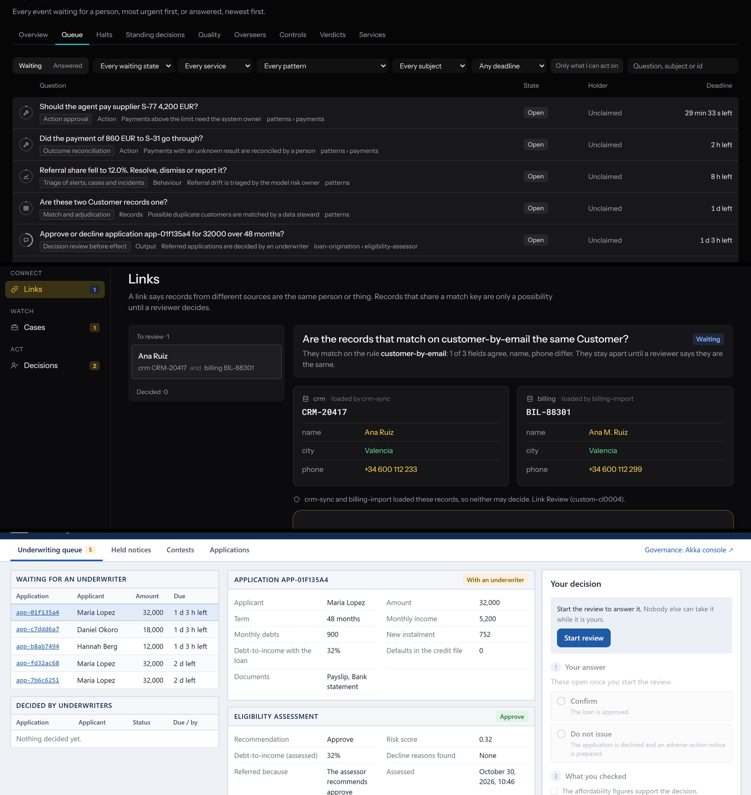
Implementation
We built the patterns once, as the akka/human library, for services built with the Akka SDK.
The engine is a state machine that takes the current time as a parameter, so a test can move the clock. An event-sourced entity holds each oversight event. A consumer drives the deadlines from the entity's journal. A view serves the queues.
A profile for each pattern holds the default settings, the subject kind and the allowed decisions as data. A service names the pattern in a control's human_config and overrides the settings it needs. A workflow raises an event and pauses with one call, and the engine resumes the workflow with the decision.
The /oversight contract is the boundary between a service and every console. A conformance suite runs the contract's scenarios against any implementation.
The library includes a tool-call guardrail that refuses a call until a person approves it, and halt guardrails that refuse calls to a halted capability.
The console kit is a set of React components, with web components and headless hooks for consoles built on other frameworks.
Figure 19
Modules of the akka/human library
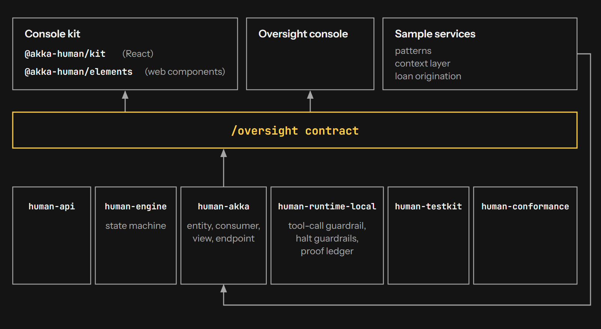
/oversight contract. The console kit and the oversight console read the contract.Lessons learned
The work continues while the person decides in 108 of the 183 classified controls
Contest and appeal (39), attestation (34), triage (22), oversight quality (6), flag and feedback (4) and override (3) let the work continue while a person decides. The patterns that hold the work, from action approval to hand-off, account for 62 controls. Halt and restart accounts for 13. An approval step in a workflow implements the patterns behind 62 of the 183 controls.
Each pattern defines independence from the decision in its own terms
Action approval excludes whoever, or whatever, made the request. Change authorization excludes the proposer and the builder. Match and adjudication excludes whoever loaded the records. Contest and appeal excludes the first decider and everyone in that person's reporting line. A rule that excludes only the requester meets the definition in action approval. That rule fails the definitions in change authorization, match and adjudication, and contest and appeal.
Regulations name a qualification for the person who decides
The Medicare Advantage rule names a physician or other health care professional with expertise appropriate to the services. Iowa names a qualified reviewer or a clinical peer. Article 14(5) of the EU AI Act requires two people "with the necessary competence, training and authority." The library checks qualification against an overseer registry when the reviewer decides. The tour's action approval control requires the eu-ai-act-oversight attestation in that registry.
Every pattern declares the outcome when nobody decides
Action approval denies. Decision review escalates, and the notice stays held. Exception refuses. Match and adjudication leaves the records unmatched. Halt and restart keeps the capability halted. Attestation marks the control's evidence stale. No pattern profile approves by default. A control configured to approve on timeout receives the verdict breached, with the reason fail-open.
Review times and approval rates are measured as a control
The EU AI Act requires that overseers can remain aware of automation bias, and the corpus measures it with the share of approvals made in under 8 seconds. No customer system in the study measured review times or approval rates. No product in the market survey reports an override rate by control, model or reviewer. The library computes the verdicts and the oversight figures once, in the service.
A person acting on an evaluation's result is a second control
The mechanism rule added 18 human controls to the corpus during the study. Each added control sits beside an existing gate or evaluation and states the decision a person makes on its result.
Limits of the evidence
Outcome reconciliation is the pattern we are least sure of, because it rests on one of our own services and no control in the corpus names it. The medical-supply voice agent handles the same situation with idempotency keys.
Match and adjudication and override each have one human control in the corpus. Two customer systems contain each of them.
The disagreements in Table 1 come from three implementations built at Akka. The customer systems show the same needs built in application code, and their rules were not compared with the Akka implementations.
The fourteen patterns cover the obligations and systems in this study. The beverage manufacturer's system marks every waiting recommendation superseded when a contract amendment arrives. Review triggered by a change to the rules that earlier decisions relied on fits none of the fourteen patterns.
Conclusion
People in enterprises manage their AI systems in recurring ways: approving an action before the system takes it, reviewing a decision about a person before it takes effect, hearing an appeal after it does, stopping a capability that misbehaves, and confirming on a schedule that a model is still fit for use. Those recurring ways of managing an AI system are the fourteen patterns in this study.
We catalogued the fourteen patterns and mapped each one to the conditions that define its behavior: who decides, how long they have, what happens when nobody decides, which decisions they may make, and what record the decision leaves.
We are building the patterns directly into the Akka Agentic AI Platform. An AI team will define how a system is managed as policy, independently of the system's code, and then manage the running system directly against that policy.
Appendix A: Human controls in the corpus by pattern
The corpus on October 31, 2026 (Verify 96ea36b6).
| Pattern | Control |
|---|---|
| Action approval | aws-agentic-scoping.scope2-human-approval |
sfc-ai-cyberattack-circular.p11iv.maker-checker | |
sg-imda-mgf-agentic.accountable.checkpoint-approval | |
| Decision review | cbuae-ai-guidance.s7a.human-oversight |
china-nfra-ai-guidance.item17b.high-risk-human-intervention | |
china-nfra-ai-guidance.item22b.low-explainability-assistive-only | |
china-nfra-ai-guidance.item22c.human-review-node-and-decision-records | |
cms-prior-auth.s422-566.adverse-determination-review | |
hkma-genai.p1c.human-in-the-loop | |
osfi-ai-bulletins.output-decision-integrity | |
peru-ai-sd-115-2025.art31.4.high-risk-human-oversight | |
us-state-health-prior-auth-ai.colorado-denial-approval | |
us-state-health-prior-auth-ai.washington-denial-review | |
us-state-iowa.hf2635.peer-review-decision | |
us-state-montana.hb178.human-review | |
| Change authorization | aicpa-soc2.cc8-1.change-approval |
china-nfra-ai-guidance.item16.committee-approval | |
mas-airg.change-reapproval | |
mifid2.rts6.art5.authorisation | |
nerc-cip.cip010.change-authorization | |
nist-sp-800-160.cm-change-decision | |
nist-sp-800-171.03-04-03.change-approval | |
osfi-e23.model-approval | |
| Exception | eu-ai-act.art26.10.authorisation |
eu-ai-act.art5.3.authorisation | |
| Match and adjudication | eu-ai-act.art14.5.two-person-verification |
| Outcome reconciliation | None |
| Contest and appeal | brazil-ai-bill.art6.explanation-and-human-review |
cbuae-ai-guidance.s7c.human-review-on-request | |
colorado-sb26-189.6-1-1705.human-review | |
eu-us-dpf.access | |
gdpr-art22.art22.4 | |
hkma-genai.p2b.customer-opt-out | |
mexico-lfpdppp.automated-decisions | |
uk-ico-ai.a3.humanreview | |
| Override | eu-ai-act.art14.4.d |
| Flag and feedback | finos-aigf.mi-11 |
sr11-7.s4.use | |
| Triage | aicpa-soc2.cc7-2.anomaly-monitoring |
enisa-cc.art27.continued-conformity-monitoring | |
enisa-cc.art29.remedial-action-window | |
eu-ai-act.art73.reporting-workflow | |
ised-canada-code.oversight.post-deployment-monitoring | |
nist-sp-800-171.03-14-06 | |
| Hand-off | china-nfra-ai-guidance.item26b.failure-fallback |
| Halt and restart | aws-agentic-scoping.graceful-degradation |
csa-agentic-trust.incident-response | |
eiopa-ai.p6.human-oversight | |
eu-ai-act.art14.4.e | |
eu-ai-act.art5.3.urgent-halt-workflow | |
eu-us-dpf.onward-transfer.stop-remediate | |
iso-iec-tr-5469.cl10.control-mitigation | |
mifid2.rts6.art12 | |
nato-ai-principles.p5.governable | |
uk-mod-jsp936.s4.halt-provision | |
| Attestation | sr11-7.s6.board-senior-management |
| Oversight quality | eu-ai-act.art14.4.b.oversight-reset |
Appendix B: The decision vocabulary
The decisions defined in Verify, with the labels the patterns show reviewers.
| Decision | Meaning | Labels in the patterns |
|---|---|---|
| APPROVE | The subject goes ahead as presented | Approve, Confirm, Approve the change, Grant until expiry, Same, It happened, Uphold, Accept as an eval case, Resolve, Close, Approve restart, Attest, Reset |
| DENY | The subject does not go ahead | Deny, Do not issue, Reject, Refuse, Different, It did not happen, Keep halted, Refuse to attest |
| EDIT | The subject goes ahead in a form the reviewer changed, and the edit is recorded with the decision | Edit, then approve; Amend; Relabel; Modify; Attest with findings |
| REDIRECT | The work goes back to an agent or another route instead of the one proposed | Return to the agent, Reassign |
| REPLAN | The proposer is asked to plan the work again, and nothing proceeds from this proposal | Retry, Retrain |
| ESCALATE | The decision moves to the next queue in the escalation chain | Escalate, Report |
| HALT | The system, service or capability named by the control stops | Halt |
| RECUSE | The reviewer steps aside, the event returns to the queue, and the reviewer cannot claim it again | No pattern label |
| REQUEST_MORE_INFO | The reviewer asks for information before deciding, and the event stays open | Ask for more |
| SEND_BACK | The proposal returns to its proposer for changes, then comes back for review | Request changes |
| DECLINE_SYSTEM | A person takes the work over and finishes it outside the automated path | Take over |
| OVERRIDE | A person replaces the system's output with their own | Override |
| DISREGARD | A person sets the system's output aside without replacing it | Disregard, Dismiss |
| REVERSE | A person undoes the effect of a decision already applied | Overturn, Reverse |
A reviewer can make an APPROVE standing for the rest of a session (APPROVE_FOR_SESSION), or make an APPROVE or a DENY standing for future events that match a declared pattern (APPROVE_FOR_PATTERN, DENY_FOR_PATTERN).